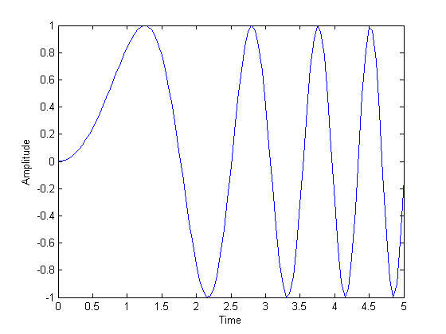
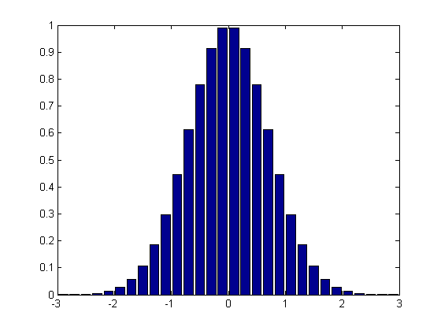
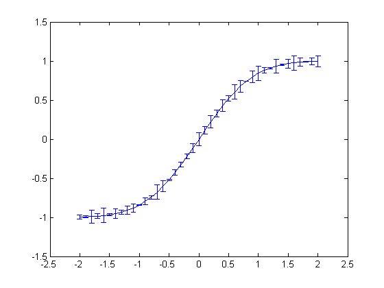
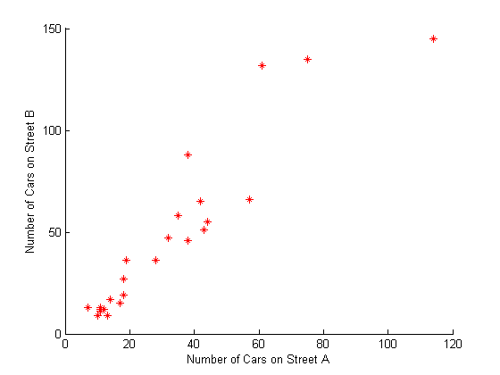

2-D Plots
Here are some examples of 2-D line plots in MATLAB® as well as a few useful tips and tricks for getting started.
Contents
You can find a gallery of all MATLAB plotting functions by following the documentation link at the end of this demo. For more information on a particular plotting function or property, type doc followed by the name of the function or property at the command prompt.
Line Plot of a Chirp
This example shows a basic line plot of a chirp signal. It also shows how to enter labels for the x and y axes using xlabel and ylabel as well as one method of initializing x-values. Type doc linspace at the command prompt for information on another method for initializing evenly spaced data sets. Here y-values are computed as a function of x and stored in the variable y, but you could also plot just the computed y-values in one command, for example, plot(sin((0:0.05:5).^2)).
x=0:0.05:5; y=sin(x.^2); plot(x,y); xlabel('Time') ylabel('Amplitude')
Bar Plot of a Bell Shaped Curve
As just suggested, you don't need a variable to hold y-values if you pass a function that generates them to plot as its y-argument.
x = -2.9:0.2:2.9; bar(x,exp(-x.*x));
Stairstep Plot of a Sine Wave
x=0:0.25:10; stairs(x,sin(x));

Errorbar Plot
The errorbar function draws a line plot of x and y values and superimposes on each observation a vertical error bar, the extent of which depends on an additional argument. Here the error data is created in line 3 using the rand function, which generates a sequence of random numbers.
x=-2:0.1:2; y=erf(x); e = rand(size(x))/10; errorbar(x,y,e);
Polar Plot
This example plots the polar coordinates of the angle theta (t, in radians) versus the radius, rho.
t=0:0.01:2*pi; polar(t,abs(sin(2*t).*cos(2*t)));

Stem Plot
A stem plot draws a marker for each x, y value which is connected to a common baseline by a vertical line.
x = 0:0.1:4; y = sin(x.^2).*exp(-x); stem(x,y)

Scatter Plot
This example shows the relationship between traffic counts on two streets hour by hour using red stars for markers. The previous example used the default markers of empty blue circles. For more information on changing line styles, colors, and markers, type doc line, doc scatter, or doc line_props in the command line.
load count.dat scatter(count(:,1),count(:,2),'r*') xlabel('Number of Cars on Street A'); ylabel('Number of Cars on Street B');
For more plotting tools and examples see Types of MATLAB Plots in the MATLAB Graphics documentation or type doc graph2d at the command prompt.